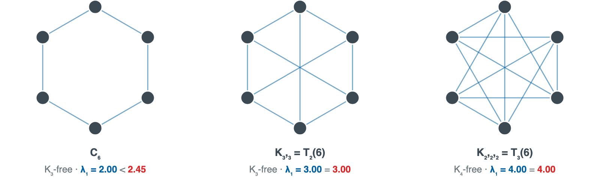
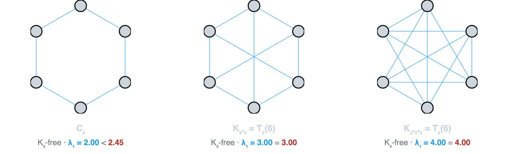
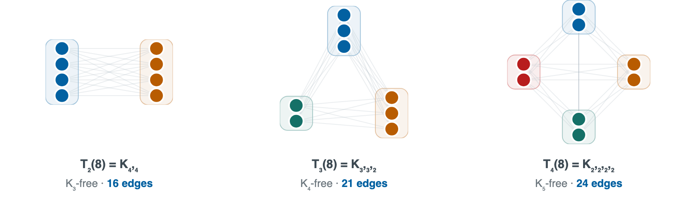
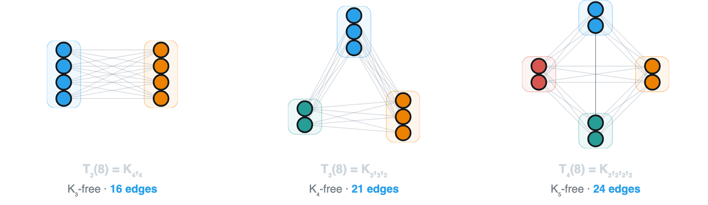
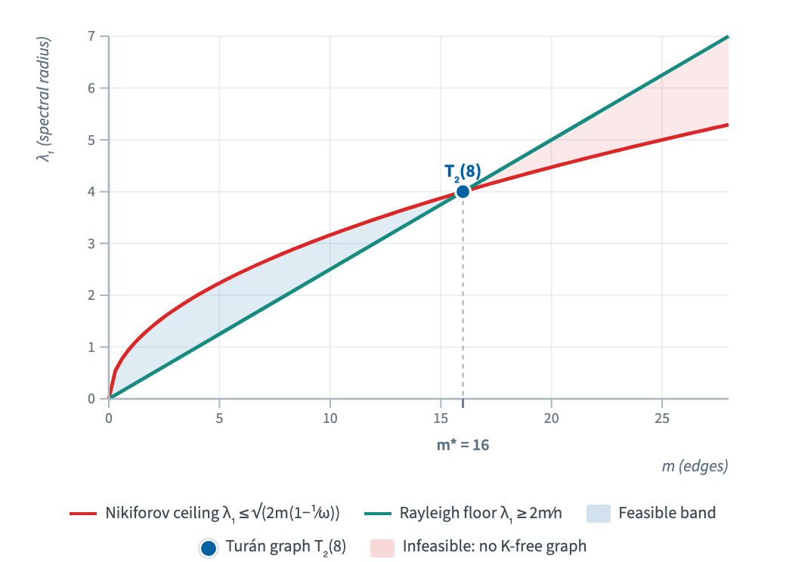
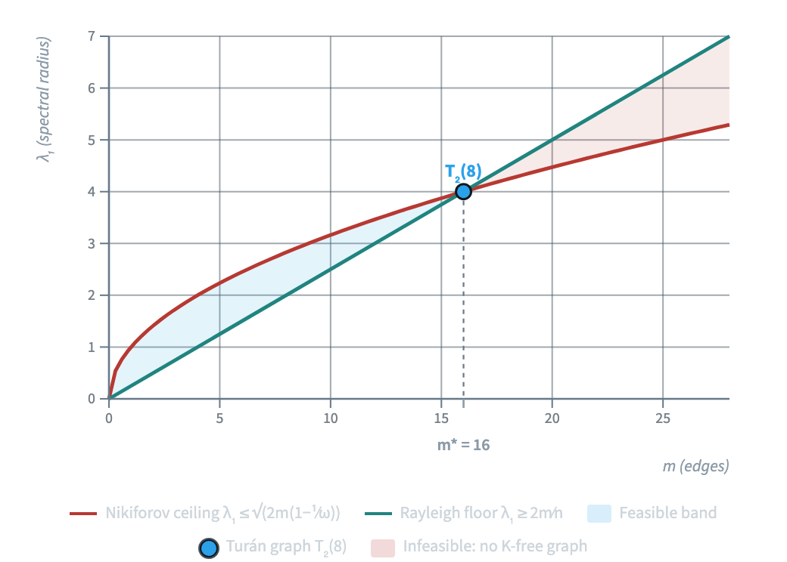

# Turán's theorem, from edges to eigenvalues
:author: {
:name: Leo Torres
:affiliation: Nora - Center for Science Communication
:email: leo@leotrs.com
} ::
:abstract:
Turán's theorem is the founding result of extremal graph theory: among
all graphs on $n$ vertices with no clique on $r+1$ vertices, the
balanced complete multipartite graph has the most edges. We present the
theorem through five classical proofs and follow one of them, the
variational argument of Motzkin and Straus, upward into spectral graph
theory, where Nikiforov's spectral strengthening returns and proves the
original theorem in two lines. All mathematics herein is known; the
contribution is the form of its presentation.
::
:paragraph: {:class: interactive-note} :span: {:class: meta-label} Interactive :: This document is interactive: every section, theorem, proof, and step can be folded, traced, and linked. Use the controls at the left edge of each block.
:toc: {
:view: tree
}
::
## Introduction: the extremal question
{:label: sec-intro}
How many edges can a graph on $n$ vertices have before some local
structure becomes unavoidable? Questions of this shape define extremal
graph theory, and the first of them was answered by Mantel in 1907
:cite:mantel1907::.
:theorem: {
:label: thm-mantel
:title: Mantel (1907)
}
:let: $G$ be a triangle-free graph on $n$ vertices. :: Then $G$ has at
most $\lfloor n^2/4 \rfloor$ edges, and the unique triangle-free graph
attaining this bound is the balanced complete bipartite graph
$K_{\lceil n/2 \rceil, \lfloor n/2 \rfloor}$.
::
Turán's theorem :cite:turan1941:: answers the question for cliques of
every size $r$ (Mantel's theorem is the case $r = 2$), and identifies the
unique extremal graph. From now on, we :write: $\edges{G}$ for the number of edges of a graph
$G$ ::.
:theorem: {
:label: thm-turan
:title: Turán (1941)
}
:let: $G$ be a graph on $n$ vertices containing no clique on $r+1$
vertices. :: Then
$$ {:label: eq-turan-bound}
\edges{G} \le \left(1 - \frac{1}{r}\right)\frac{n^2}{2},
$$
and more precisely $\edges{G} \le \edges{\turan{n}}$, where $\turan{n}$ is the Turán
graph: the complete $r$-partite graph on $n$ vertices with part sizes
as equal as possible (:ref:def-turan-graph, defined below::). Equality
$\edges{G} = \edges{\turan{n}}$ holds if and only if $G = \turan{n}$.
::
Turán's theorem is a statement about edges. The thesis of this paper is that it is equally a statement about eigenvalues. That
destination is worth seeing before the journey: the same extremal bound
controls the spectral radius $\specrad$, the largest eigenvalue of the
adjacency matrix. In :ref:wid-spectral:: you can edit the graph and choose
which clique $K_{r+1}$ to forbid; $\specrad$ sits at or below the ceiling
exactly when the graph is $K_{r+1}$-free, with the Turán graph tight
against it. The sections that follow establish these results, and beyond, in full formality.
:html: {
:label: wid-spectral
:path: widgets/spectral-workbench.html
:static: widgets/spectral-workbench-static.png
:dark: widgets/spectral-workbench-dark.png
}
:caption: :span: {:label: rx-verdict} This graph is K₃-free, so
its spectral radius λ₁ = 2.00 sits below the Nikiforov ceiling 2.45 ::.
::
## The extremal object
{:label: sec-extremal}
:definition: {
:label: def-turan-graph
}
:let: $n, r \ge 1$ be integers ::. :write: $\turan{n}$ for the complete
$r$-partite graph on $n$ vertices whose part sizes differ by at most
one ::. We call $\turan{n}$ the Turán graph. Parts may be empty; in
particular, for $n \le r$ every part has at most one vertex and
$\turan{n} = K_n$.
::
:html: {
:label: wid-turan
:path: widgets/turan-workbench.html
:static: widgets/turan-workbench-static.png
:dark: widgets/turan-workbench-dark.png
}
:caption: :span: {:label: rx-turan} T₃(8) splits these 8 vertices into parts of sizes 3, 3, 2, the 21 edges being the most any K₄-free graph on 8 vertices can have. ::
::
A complete multipartite graph contains no clique larger than its number
of parts, so $\turan{n}$ is $K_{r+1}$-free. Among complete $r$-partite
graphs it is the edge-maximizer, which is the content of the following
lemma.
:lemma: {
:label: lem-balanced
:title: Balanced parts maximize
}
Among all complete $r$-partite graphs on $n$ vertices, the maximum
number of edges is attained exactly when the part sizes differ by at
most one.
::
:sketch:
If two parts have sizes differing by at least two, moving a single
vertex from the larger part to the smaller one strictly increases
the number of edges. Hence any edge-maximal configuration is
balanced, and all balanced configurations have the same number of
edges.
::
:proof: {:collapsed:}
:step: {:label: stp-setup}
:let: $G$ be a complete $r$-partite graph on $n$ vertices with parts
$A_1, \ldots, A_r$ ::.
::
:step: {:label: stp-suffices}
It :suffices: to prove that moving one vertex from a part $A_1$ to a part
$A_2$ with $|A_1| \ge |A_2| + 2$ strictly increases the number of edges ::.
:p: Such a move shows no unbalanced graph is edge-maximal, so every
maximizer is balanced; balanced graphs, being mutually isomorphic, all
share the same edge count. ::
::
:step: {:label: stp-assume}
:assume: $|A_1| \ge |A_2| + 2$ ::.
::
:step: {:label: stp-move-deg}
:claim: Moving one vertex from $A_1$ to $A_2$ changes the number of edges
by $|A_1| - |A_2| - 1$. ::
:p:
:step:
Only edges incident to the moved vertex change, since adjacency
in a complete $r$-partite graph depends only on the parts of the
endpoints.
::
:step: The moved vertex's degree goes from $n - |A_1|$ to $n - |A_2| - 1$,
a difference of $|A_1| - |A_2| - 1$. ::
::
::
:step: By :ref:stp-move-deg:: and :ref:stp-assume::, the edge count changes
by $|A_1| - |A_2| - 1 > 0$. ::
::
Knowing the balanced graph is extremal still leaves its edge count unstated.
Two facts about $\edges{\turan{n}}$ recur in the proofs below. The first bounds that
count by the clean quantity in :ref:eq-turan-bound::, so that the sharp bound
$\edges{G} \le \edges{\turan{n}}$, which three of the proofs establish, carries the headline
inequality with it.
:lemma: {
:label: lem-turan-bound
:title: Turán graph edge bound
}
:claim: The Turán graph's edge count satisfies ::
$$ {
:label: eq-turan-graph-bound
}
\edges{\turan{n}} \le \left(1 - \frac{1}{r}\right)\frac{n^2}{2},
$$
with equality if and only if $r$ divides $n$.
::
:proof: {:collapsed:}
:step: {:label: stp-tb-count}
:write: $n_1, \ldots, n_r$ for the part sizes of $\turan{n}$, so that
$n_1 + \cdots + n_r = n$ ::. :claim: Then ::
$$ {
:label: eq-tb-count
}
\edges{\turan{n}} = \frac{1}{2}\left(n^2 - \sum_i n_i^2\right).
$$
:p: $\turan{n}$ omits exactly the pairs lying in a common part, so
$\edges{\turan{n}} = \binom{n}{2} - \sum_i \binom{n_i}{2}$; expanding the binomials
and using $\sum_i n_i = n$ gives :ref:eq-tb-count::. ::
::
:step: The bound follows.
:p: By Cauchy-Schwarz, $\sum_i n_i^2 \ge (\sum_i n_i)^2 / r = n^2/r$, so
:ref:eq-tb-count:: gives $\edges{\turan{n}} \le \frac{1}{2}(n^2 - n^2/r)$, which is
:ref:eq-turan-graph-bound::. Equality holds exactly when all $n_i$ are
equal, that is when $r$ divides $n$. ::
::
::
The second peels one vertex from each part, relating $\edges{\turan{n}}$ to
$\edges{\turan{n-r}}$; it is the recurrence behind the inductive proof.
:lemma: {
:label: lem-turan-recursion
:title: Turán graph recursion
}
:let: $n > r$::, then :claim:the Turán graph's edge count satisfies::
$$ {
:label: eq-turan-recursion
}
\edges{\turan{n}} = \binom{r}{2} + (r-1)(n-r) + \edges{\turan{n-r}}.
$$
::
:proof: {:collapsed:}
:step: {:label: stp-rec-build}
:write: $\turan{n}$ as $\turan{n-r}$ with one new vertex added to each of its
$r$ parts, some possibly empty when $n < 2r$ ::.
:p: Adding one vertex to every part keeps the parts balanced, so on $n$
vertices the result is $\turan{n}$ by :ref:def-turan-graph::. :: ::
:step: {:label: stp-rec-new}
:claim: The $r$ new vertices contribute $\binom{r}{2}$ edges. ::
:p: They lie in distinct parts, so every pair among
them is an edge. :: ::
:step: {:label: stp-rec-old}
:claim: The $n - r$ old vertices contribute $(r-1)(n-r)$ new edges. ::
:p: Each old vertex is joined to the one new vertex
in each of the other $r-1$ parts. :: ::
:step: The recursion holds.
:p: Each edge of $\turan{n}$ joins two old vertices, two new ones, or one of
each. The old vertices induce $\turan{n-r}$, so the first class has
$\edges{\turan{n-r}}$ edges; the other two are counted in :ref:stp-rec-new:: and
:ref:stp-rec-old::. Summing the three classes yields :ref:eq-turan-recursion::. ::
::
::
## Five proofs
{:label: sec-five-proofs}
We give five proofs of :ref:thm-turan::, reaching it through different
machinery, induction, symmetrization, degree comparison, continuous
optimization, and averaging, yet each is in the end an answer to the same
question: why no $K_{r+1}$-free graph can beat the balanced complete
$r$-partite graph. That extremal graph and the $K_{r+1}$-free hypothesis are
the only fixtures every proof shares. Everything else, the objects each one
builds and the quantities it tracks, differs from lens to lens.
Three of the proofs are structural.
:ref:sec-proof-induction, Turán's induction:: and
:ref:sec-proof-zykov, Zykov's symmetrization:: push an
arbitrary extremal graph toward the Turán graph by local moves, the first by
splitting off a clique and recursing, the second by making non-adjacent
vertices into twins, each checking that no edge is lost on the way.
:ref:sec-proof-erdos, Erdős's degree majorization:: trades surgery for a
comparison of degree sequences, dominating $G$ by a complete multipartite
graph and reading off the bound. These three establish the exact bound
$\edges{G} \le \edges{\turan{n}}$, and symmetrization also pins down uniqueness; they are
the lenses that travel furthest, the same reductions reappearing in stability
results and, through the chromatic number, in the Erdős-Stone-Simonovits
theorem, which fixes the extremal number of an arbitrary forbidden subgraph.
The last two proofs are analytic. :ref:sec-proof-ms, Motzkin and Straus::
recast the discrete maximum as the maximum of a quadratic form over the
probability simplex, trading combinatorics for convex optimization, while
:ref:sec-proof-prob, the probabilistic proof:: extracts the same bound from
the expectation of a single random vertex ordering; both yield the clean form
:ref:eq-turan-bound::. The continuous lens is also the bridge to what follows:
the quadratic form Motzkin and Straus maximize over the simplex is, over the
unit sphere instead, the one whose maximum is the largest eigenvalue of the
adjacency matrix. That is the thread :ref:sec-spectral, the final section::
pulls.
Shared ideas are cross-referenced where they occur.
:paragraph: {:class: structured-note} :span: {:class: meta-label} Structured proofs :: Each proof below is fully structured, in a hierarchical style proposed in :cite:lamport2012::. As you read one, the sidebar tracks its live hypotheses and current goal, and lets you step through its dependency graph.
### Turán's induction
{:label: sec-proof-induction}
:sketch:
Induct on $n$ with $r$ fixed. An edge-maximal $K_{r+1}$-free graph
$G$ contains a copy $A$ of $K_r$. The edges of $G$ split into edges
inside $A$, edges from $A$ to the rest, and edges inside the rest.
The three contributions are at most $\binom{r}{2}$, at most
$(r-1)(n-r)$, and at most $\edges{\turan{n-r}}$ by induction, which sum to
exactly $\edges{\turan{n}}$.
::
:proof: {:of: thm-turan}
:step: {:label: stp-ind-base}
:claim: For $n \le r$, :ref:eq-turan-bound, the bound:: holds. ::
:p:
:step: {:label: stp-ind-base-assume}
:assume: $n \le r$ ::.
::
:step: {:label: stp-ind-base-kn}
:claim: $\turan{n} = K_n$. ::
:p: For $n \le r$ every part of $\turan{n}$ holds at most one vertex by
:ref:def-turan-graph::, so all $n$ vertices lie in distinct parts and
are pairwise adjacent. ::
::
:step: {:label: stp-ind-base-eval}
:claim: $\edges{\turan{n}} = \binom{n}{2}$. ::
::
:step: {:label: stp-ind-clique-free} :claim: Every graph on $n$ vertices is $K_{r+1}$-free. ::
:p: by :ref:stp-ind-base-assume:: ::
::
:step: Every $K_{r+1}$-free graph $G$ on $n$ vertices has $\edges{G} \le
\binom{n}{2} = \edges{\turan{n}}$.
:p: By :prev: and :prev2: ::
::
:: ::
:step: {:label: stp-ind-maximal}
:let: $n > r$ ::, :assume: :ref:eq-turan-bound, the bound:: for all
$K_{r+1}$-free graphs on fewer than $n$ vertices ::, and :assume: $G$
is edge-maximal,
meaning that adding any edge creates a $K_{r+1}$ ::.
::
:step: {:label: stp-ind-kr}
:claim: $G$ contains a clique on $r$ vertices. ::
:p:
:step: {:label: stp-ind-kr-pick}
:pick: non-adjacent vertices $u, v \in G$ ::.
:p: This is possible because $G$ is not complete, since otherwise
it would contain $K_{r+1}$, violating the assumption in :ref:thm-turan::. :: ::
:step: {:label: stp-ind-kr-S}
:pick: a clique $S$ on $r+1$ vertices of $G + uv$ ::.
:p: Adding the edge $uv$ to $G$ creates a $K_{r+1}$ by the
edge-maximality assumed in :ref:stp-ind-maximal::. :: ::
:step: {:label: stp-ind-kr-uv}
:claim: $S$ contains both $u$ and $v$. ::
:p: Otherwise $S$ would already be a clique of $G$,
contradicting that $G$ is $K_{r+1}$-free. :: ::
:step: The set $S \setminus \{v\}$ is a clique on $r$ vertices.
:p: By :ref:stp-ind-kr-uv:: the only non-adjacent pair of $S$ is $uv$. ::
::
:: ::
:step: {:label: stp-ind-AB} :let: $A$ be a clique on $r$ vertices :: and :write: $B = V(G) \setminus A$ ::. ::
:step: {:label: stp-ind-split}
:let: $e(A,B)$ be the number of edges with one endpoint in each set :: and
:write: $\edges{G} = e(A) + e(A, B) + e(B)$. :: :claim: We immediately have $e(A) = \binom{r}{2}$. :: ::
:step: {:label: stp-ind-cross}
:claim: $e(A, B) \le (r-1)(n-r)$. ::
:p: Each of the $|B| = n - r$ vertices of $B$ sends at most $r-1$ edges to $A$. Otherwise,
if one vertex $w \in B$ had $r$ edges to $A$, then $A \cup {w}$ would be a $r+1$ clique, violating the hypotheses. ::
::
:step: {:label: stp-ind-rest}
:claim: $e(B) \le \edges{\turan{n-r}}$. ::
:p: The induced graph $G[B]$ on the set $B$ of :ref:stp-ind-AB::
is $K_{r+1}$-free on $n - r < n$ vertices, so the inductive
hypothesis of :ref:stp-ind-maximal:: bounds its edges. :: ::
:step: $\edges{G} \le \edges{\turan{n}}$.
:p: Use :ref:stp-ind-cross::, :ref:stp-ind-rest:: and :ref:lem-turan-recursion:: to bound :ref:stp-ind-split::. ::
::
::
This argument establishes :ref:eq-turan-bound, the bound:: only; carrying uniqueness through the
induction would require a strengthened inductive hypothesis, and we obtain it
instead from the symmetrization proof.
### Zykov symmetrization
{:label: sec-proof-zykov}
:sketch:
Take $G$ edge-maximal among $K_{r+1}$-free graphs on $n$ vertices.
Replacing a vertex $v$ by a twin of a non-neighbor $u$ preserves
$K_{r+1}$-freeness and changes the edge count by $\deg u - \deg v$
:cite:zykov1949::. Maximality then forces non-adjacency to be an
equivalence relation, so $G$ is complete multipartite with at most
$r$ parts, and :ref:lem-balanced:: finishes the proof.
::
:proof: {:of: thm-turan :collapsed:}
:step: {:label: stp-zyk-setup-1}
:let: $G$ be a graph with the maximum number of edges among all
$K_{r+1}$-free graphs on $n$ vertices. :: ::
:step: {:label: stp-zyk-setup-2}
It :suffices: to show $\edges{G} \le \edges{\turan{n}}$ for this $G$. ::
:p: $G$ is edge-maximal by :prev:. :: ::
:step: {:label: stp-zyk-v-to-u}
:write: $G_{v \to u}$ for the graph obtained by deleting $v$ and
adding a new vertex $u'$ adjacent to exactly the neighbors of $u$. ::
:claim: If $v$ and $u$ are not neighbors, then $\edges{G_{v \to u}} = \edges{G} - \deg v + \deg u$. ::
:p: Deleting $v$ removes $\deg v$ edges; the twin $u'$ contributes $\deg u$ new ones.
Since $u \not\sim v$, deleting $v$ does not change $\deg u$. ::
::
:step: {:label: stp-zyk-twin}
:pick: two non-adjacent vertices $u, v$.:: :claim: $G_{v \to u}$ is
$K_{r+1}$-free. ::
:p:
:step: {:label: stp-zyk-twin-one}
:claim: A clique of $G_{v \to u}$ contains at most one of $u$
and $u'$. ::
:p: By :ref:stp-zyk-twin:: $u' \not\sim u$, so they cannot both lie in
a clique. :: ::
:step: {:label: stp-zyk-twin-swap}
:claim: Replacing $u'$ by $u$ in a clique of $G_{v \to u}$ yields a
clique of $G$ of the same size. ::
:p: Because $u$ and $u'$ have the same neighbors. :: ::
:step:
:qed:
:p: A $K_{r+1}$ in $G_{v \to u}$ would by :ref:stp-zyk-twin-swap:: yield a
$K_{r+1}$ in $G$, which has none. :: ::
:: ::
:step: {:label: stp-zyk-eqdeg}
:claim: Any two non-adjacent vertices of $G$ have equal degree. ::
:p: If $u \not\sim v$ and $\deg u > \deg v$, then $G_{v \to u}$ is
$K_{r+1}$-free by :ref:stp-zyk-twin:: and has more edges than $G$ by
:ref:stp-zyk-v-to-u::, contradicting :ref:stp-zyk-setup-1::. :: ::
:step: {:label: stp-zyk-trans}
:claim: Non-adjacency is an equivalence relation on $V(G)$. ::
:p:
:step: {:label: stp-zyk-trans-setup}
:let: $u, v, w$ be vertices of $G$ ::. :assume: toward a
contradiction that $u \not\sim v$, $v \not\sim w$, but $u \sim w$ ::.
::
:step: {:label: stp-zyk-trans-deg}
:claim: $u, v, w$ all have the same degree $d$. ::
:p: By :ref:stp-zyk-eqdeg::. :: ::
:step: {:label: stp-zyk-trans-count}
:let: $G' = G_{u \to v}$ and $G'' = G'_{w \to v}$. ::
It :suffices: to prove $G''$ is $K_{r+1}$-free with $\edges{G} + 1$ edges. ::
:p: This would contradict :ref:stp-zyk-setup-1::. :: ::
:step: :claim: $G''$ is $K_{r+1}$-free. ::
:p: Each step twins a vertex onto a non-adjacent one, so
:ref:stp-zyk-twin:: applies twice. :: ::
:step: :claim: $\edges{G'} = \edges{G}$. ::
:p: By :ref:stp-zyk-v-to-u:: and :ref:stp-zyk-trans-deg::,
$\edges{G'} = \edges{G} - \deg u + \deg v = \edges{G}$. :: ::
:step: :claim: $\edges{G''} = \edges{G} + 1$. ::
:p: Deleting $u$ drops $\deg w$ to $d - 1$ (as $u \sim w$), so
:ref:stp-zyk-v-to-u:: gives $\edges{G''} = \edges{G'} - (d - 1) + d = \edges{G} + 1$.
:: ::
:step:
:qed:
:p: Such a triple is impossible, since $G''$ would be a $K_{r+1}$-free
graph with more edges than $G$, against :ref:stp-zyk-setup-1::. So
non-adjacency is transitive; being trivially reflexive and symmetric too, it is
an equivalence relation. :: ::
:: ::
:step: {:label: stp-zyk-multi}
:claim: $G$ is complete multipartite with at most $r$ parts. ::
:p:
:step: {:label: stp-zyk-multi-parts}
:claim: $G$ is complete multipartite, its parts being the
classes of :ref:stp-zyk-trans::. ::
:p: Vertices in the same class are non-adjacent and vertices in
different classes are adjacent. :: ::
:step: Choosing one vertex from each of the $s$ classes of
:ref:stp-zyk-multi-parts:: yields a $K_s$, so $s \le r$ since
$G$ is $K_{r+1}$-free. ::
:: ::
:step: {:label: stp-zyk-full}
:claim: For $n > r$, $G$ has exactly $r$ parts. ::
:p:
:step: {:label: stp-zyk-full-assume}
:assume: toward a contradiction that the number of parts $s$ in
:ref:stp-zyk-multi:: is less than $r$. ::
::
:step: {:label: stp-zyk-full-pick}
:pick: a part $P$ with at least two vertices. ::
:p: Since $n > r > s$, there are more vertices than parts, so some
part holds at least two of them. :: ::
:step: {:label: stp-zyk-full-split}
:write: $G'$ for the complete multipartite graph obtained by
splitting $P$ into two nonempty parts $P_1$ and $P_2$. ::
It :suffices: to show $G'$ is $K_{r+1}$-free with $\edges{G'} > \edges{G}$. ::
:p: Such a $G'$ would contradict :ref:stp-zyk-setup-1::. :: ::
:step: :claim: $G'$ is $K_{r+1}$-free. ::
:p: $G'$ has $s + 1 \le r$ parts, since $s < r$ by
:ref:stp-zyk-full-assume::, so it contains no $K_{r+1}$. :: ::
:step: :claim: $\edges{G'} > \edges{G}$. ::
:p: Splitting $P$ adds every edge between $P_1$ and $P_2$, both
nonempty, and removes none. :: ::
:: ::
:step: :claim: $\edges{G} \le \edges{\turan{n}}$, with equality iff $G = \turan{n}$. ::
:p: If $n \le r$ then $K_n = \turan{n}$ is the unique $K_{r+1}$-free maximizer.
If $n > r$ then $G$ has $r$ parts by :ref:stp-zyk-full::, so among complete
$r$-partite graphs :ref:lem-balanced:: gives the bound, with equality
exactly for balanced parts, that is, for $G = \turan{n}$. :: ::
::
### Erdős degree majorization
{:label: sec-proof-erdos}
:sketch:
For every $K_{r+1}$-free graph $G$ there is a complete multipartite
graph $H$ with at most $r$ parts on the same vertex set with
$\deg_H(v) \ge \deg_G(v)$ for every vertex $v$ :cite:erdos1970::.
The construction is by induction on $r$, recursing on the
neighborhood of a maximum-degree vertex. Summing degrees gives $\edges{G} \le \edges{H}$, and complete
multipartite graphs have at most $\edges{\turan{n}}$ edges by
:ref:lem-balanced::.
::
:proof: {:of: thm-turan :collapsed:}
:step: {:label: stp-erd-suffices}
It :suffices: to find, for every $K_{r+1}$-free graph $G$, a complete
multipartite graph $H$ with at most $r$ parts, on the same vertex set,
such that $\deg_H(v) \ge \deg_G(v)$ for every vertex $v$ ::.
:p: Summing the inequality over all vertices gives $\edges{G} \le \edges{H}$. Splitting parts if necessary, $H$ is a
subgraph of a complete multipartite graph with exactly $r$ parts (some of them possibly
empty) on the same vertices, so $\edges{H} \le \edges{\turan{n}}$ by
:ref:lem-balanced::. Hence $\edges{G} \le \edges{\turan{n}}$, and equation
:ref:eq-turan-bound:: follows by :ref:lem-turan-bound::. ::
::
:step: {:label: stp-erd-base}
We will proceed by induction on $r$. First, the base case: :claim: Such an $H$ exists when $V(G)$ is empty or $r = 1$. ::
:p: If $V(G)$ is empty there is nothing to prove. If $r = 1$ then $G$
is $K_2$-free, hence has no edges, so $H = G$, a single part.
:: ::
:step: {:label: stp-erd-ind-hyp}
:let: $r > 1$ ::, and :assume: as induction hypothesis that every
$K_r$-free graph $G'$ admits a complete multipartite graph on $V(G')$
with at most $r - 1$ parts whose degrees dominate those of $G'$. :: ::
:step: {:label: stp-erd-nbhd}
:pick: a vertex $w$ of $G$ with maximum degree $\Delta$ :: and :write: $N = N(w)$
for its neighborhood in $G$ ::. :claim: $G[N]$ is $K_r$-free. ::
:p: A clique on $r$ vertices inside $N$ together with $w$ would be a
$K_{r+1}$ in $G$. :: ::
:step: {:label: stp-erd-ih}
By :ref:stp-erd-ind-hyp, the induction hypothesis:: applied
to $G[N]$, :let: $H'$ be a complete multipartite graph on $N$ with at
most $r-1$ parts :: and $\deg_{H'}(v) \ge \deg_{G[N]}(v)$ for every
$v \in N$.
:p: The hypothesis applies because $G[N]$ is $K_r$-free by
:ref:stp-erd-nbhd::. :: ::
:step: {:label: stp-erd-construct}
:write: $S = V(G) \setminus N$ ::, and :write: $H$ for the graph on
$V(G)$ whose edges are those of $H'$ together with all pairs between
$S$ and $N$ ::. Then $H$ is complete multipartite with at most $r$
parts.
:p: The parts of $H$ are the parts of $H'$ plus the new part $S$. :: ::
:step: {:label: stp-erd-degs}
:claim: $\deg_H(v) \ge \deg_G(v)$ for every vertex $v$, completing
the induction. ::
:p:
:step: {:label: stp-erd-degs-S}
:claim: For $v \in S$, $\deg_H(v) = |N| = \Delta \ge \deg_G(v)$.
::
:p: In the graph $H$ of :ref:stp-erd-construct:: every vertex of
$S$ is joined to all of $N$, and $\Delta$ is the maximum degree
of $G$ by :ref:stp-erd-nbhd::. :: ::
:step: {:label: stp-erd-degs-N}
:claim: For $v \in N$, $\deg_H(v) \ge \deg_G(v)$. ::
:p: In $H$, $\deg_H(v) = \deg_{H'}(v) + |S| \ge \deg_{G[N]}(v) +
|S|$ by :ref:stp-erd-ih::, and this is at least $\deg_G(v)$ since
every neighbor of $v$ in $G$ lies in $N$ or in $S$. :: ::
:: ::
::
### Motzkin and Straus
{:label: sec-proof-ms}
This proof is central to our exposition: it converts the combinatorial
statement into a continuous optimization, and the spectral results of
:ref:sec-spectral, the next section:: build on it. From now on, we :let:
$\clq$ be the clique number of $G$, the number of vertices in a largest
clique of $G$. ::
:theorem: {
:label: thm-ms
:title: Motzkin-Straus (1965)
}
:let: $\Delta_n = \{x \in \mathbb{R}^n : x_i \ge 0, \sum_i x_i = 1\}$ be the
standard simplex on the $n$ vertices of $G$; we think of the $i$-th
coordinate of $\mathbb{R}^n$ as placing a weight $x_i$ on vertex $i$. :: Then
$$ {
:label: eq-ms
}
\max_{x \in \Delta_n} \; 2 \sum_{\{i,j\} \in E} x_i x_j
\;=\; 1 - \frac{1}{\clq}.
$$
::
:sketch:
Establish that the left-hand side is greater than or equal the right-hand
side, and, separately, also less than or equal to it. For the lower bound,
place uniform weight $1/\clq$ on the vertices of a maximum clique. For
the upper bound, take a maximizer with smallest support. If its support
contained a non-adjacent pair, weight could be shifted from one to the
other without decreasing the objective, shrinking the support. Hence the
support is a clique, and on a clique of size $k$ the objective is at most
$1 - 1/k$ :cite:motzkin1965::.
::
:proof: {:of: thm-turan :collapsed:}
:step: {:label: stp-ms-f}
:write: $f(x) = 2 \sum_{\{i,j\} \in E} x_i x_j$ ::. :claim: The maximum of
$f$ over $\Delta_n$ exists. ::
:p: $f$ is continuous and $\Delta_n$ is compact. :: ::
:step: {:label: stp-ms-lower}
:claim: $\max_{x \in \Delta_n} f(x) \ge 1 - 1/\clq$. ::
:p: :pick: a clique $K$ on $\clq$ vertices :: and :write: $x_i =
1/\clq$ for $i \in K$ and $x_i = 0$ otherwise ::. All
$\binom{\clq}{2}$ pairs inside $K$ are edges, so $f(x) = 2
\binom{\clq}{2} / \clq^2 = 1 - 1/\clq$. :: ::
:step: {:label: stp-ms-upper}
:claim: $\max_{x \in \Delta_n} f(x) \le 1 - 1/\clq$. ::
:p:
:step: {:label: stp-ms-support}
:claim: Some maximizer of $f$ has a clique as its support. ::
:p:
:step: {:label: stp-ms-pickmin}
:pick: a maximizer $x^*$ :: :st: its support $P = \{i : x^*_i >
0\}$ has the fewest elements among all maximizers ::.
:p: Maximizers exist by :ref:stp-ms-f::, and support sizes are
positive integers, so a maximizer of minimum support exists. ::
::
:step: {:label: stp-ms-pick-non-adj} :assume: toward a contradiction that some $i, j \in P$ are distinct and
non-adjacent. :: ::
:step: {:label: stp-ms-linear}
:write: $s_k = 2 \sum_{l \sim k} x^*_l$ for twice the total
weight adjacent to vertex $k$ ::. :claim: Shifting an amount $t$ of weight from $i$
to $j$ changes $f$ by exactly $t(s_j - s_i)$. ::
:p: $i$ and $j$ are non-adjacent by :ref:stp-ms-pick-non-adj::, thus the product $x_i x_j$ does not
occur in $f$, so $f$ is linear in the shift. :: ::
:step: :assume: $s_j \ge s_i$ without loss of generality::, and shift
all of $x^*_i$ onto $j$. By :ref:stp-ms-linear:: the value does
not decrease, yet the support loses the element $i$,
contradicting :ref:stp-ms-pickmin::. ::
:: ::
:step: {:label: stp-ms-cliquebound}
:claim: If the support of $x \in \Delta_n$ is a clique $K$ on $k$
vertices, then $f(x) \le 1 - 1/k$. ::
:p:
:calc:
:step: $f(x) = \left(\sum_{i \in K} x_i\right)^2 - \sum_{i \in K} x_i^2$
:p: Every pair within the clique $K$ is an edge and $x$ vanishes
off $K$. ::
::
:step: $= 1 - \sum_{i \in K} x_i^2$
:p: We have $\sum_{i \in K} x_i = 1$ because $x$ is an element of
the simplex. ::
::
:step: $\le 1 - 1/k$
:p: By Cauchy-Schwarz, $k \sum_{i \in K} x_i^2 \ge \left(\sum_{i
\in K} x_i\right)^2 = 1$, so $\sum_{i \in K} x_i^2 \ge 1/k$. ::
::
::
:: ::
:step: By :ref:stp-ms-support:: a maximizer's support is a clique, of
some size $k \le \clq$, so :ref:stp-ms-cliquebound:: bounds the
maximum by $1 - 1/k \le 1 - 1/\clq$. ::
:: ::
::
:corollary: {
:label: cor-ms-turan
}
Turán's bound, equation :ref:eq-turan-bound::, follows by evaluating
equation :ref:eq-ms:: at the uniform vector $x = (1/n, \ldots, 1/n)$,
since $\clq \le r$ for a $K_{r+1}$-free graph and $1 - 1/\clq \le
1 - 1/r$.
::
### The probabilistic proof
{:label: sec-proof-prob}
:sketch:
Order the vertices uniformly at random and select every vertex that
precedes all of its neighbors. The selected set is independent, and
each $v$ is selected with probability $1/(\deg v + 1)$, so some
independent set has size at least $\sum_v 1/(\deg v + 1)$, the
Caro-Wei bound :cite:caro1979,wei1981::. Applying this in
the complement of a $K_{r+1}$-free graph and using convexity yields
Turán's bound.
::
:proof: {:of: thm-turan :collapsed:}
:step: {:label: stp-prob-cw}
:claim: Every graph $G$ has an independent set of size at least
$\sum_v \frac{1}{\deg v + 1}$. ::
:p:
:step: {:label: stp-prob-order}
:pick: a uniformly random ordering $\sigma$ of $V(G)$ ::, and
:write: $I_\sigma$ for the set of vertices that appear before
all of their neighbors ::. ::
:step: {:label: stp-prob-indep}
:claim: $I_\sigma$ is an independent set. ::
:p: :pick: two adjacent vertices $v,w$ :: :st: $\sigma(w) > \sigma(v)$.::
Since $w$ does not precede all of its neighbors according to $\sigma$, $ w \notin I_\sigma$. ::
::
:step: {:label: stp-prob-expect}
:claim: $\mathbb{E}|I_\sigma| = \sum_v \frac{1}{\deg v + 1}$. ::
:p: Vertex $v$ lands in $I_\sigma$
exactly when it comes first among the $\deg v + 1$ vertices
consisting of $v$ and its neighbors, an event of probability
$1/(\deg v + 1)$ by symmetry. Sum over $v$ by linearity of
expectation. :: ::
:step: Some outcome of $|I_\sigma|$ is at least its expectation,
computed in :ref:stp-prob-expect::. ::
:: ::
:step: {:label: stp-prob-comp}
:claim: If $G$ is $K_{r+1}$-free with $m$ edges, then $r \ge \sum_v
\frac{1}{n - \deg v}$. ::
:p: Apply :ref:stp-prob-cw:: to the complement graph
$G^c$, in which $v$ has degree $n - 1 - \deg v$. An
independent set of $G^c$ is a clique of $G$, so $r \ge
\clq(G) \ge \sum_v \frac{1}{n - \deg v}$. :: ::
:step: {:label: stp-prob-convex}
:claim: $\sum_v \frac{1}{n - \deg v} \ge \frac{n^2}{n^2 - 2m}$. ::
:p: The function $t \mapsto \frac{1}{n - t}$ is convex on the
relevant range, so by Jensen's inequality the sum is at least
$\frac{n}{n - \bar{d}}$ where $\bar{d} = 2m/n$ is the average
degree. :: ::
:step: :claim: $m \le \left(1 -\frac{1}{r}\right)\frac{n^2}{2}$. ::
:p: Chain :ref:stp-prob-comp:: and :ref:stp-prob-convex:: and rearrange. :: ::
::
:remark:
This argument proves the bound of equation :ref:eq-turan-bound:: but not
the exact statement $\edges{G} \le \edges{\turan{n}}$, nor the uniqueness of the extremal
graph: the convexity step is not tight for unbalanced degree sequences, and
recovering exactness requires a separate argument.
::
## From edges to eigenvalues
{:label: sec-spectral}
:notation:
\specrad $\lambda_1$ spectral radius
\turan $T_r(#1)$ Turán graph
\edges $e(#1)$ number of edges
\clq $\omega$ clique number
::
:write: $\mathbf{A}$ for the adjacency matrix of $G$ ::, and :write: $\specrad
\ge \lambda_2 \ge \ldots \ge \lambda_n$ for its eigenvalues ::. Even with no
hypothesis on $G$, the largest eigenvalue is at least the average degree, so it
already grows with the number of edges.
:lemma: {
:label: lem-rayleigh
:title: Rayleigh bound
}
For every graph $G$ with $m$ edges, $\specrad \ge 2m/n$.
::
:sketch:
Evaluate the Rayleigh quotient for $\specrad$ at the all-ones vector
$\mathbf{1}$.
::
:proof: {:collapsed:}
:step: {:label: stp-rayleigh-def}
$\specrad = \max_{x \neq 0} \frac{x^{\top} \mathbf{A} x}{x^{\top} x}$.
:p: The Rayleigh quotient characterization of the largest eigenvalue
of a symmetric matrix. :: ::
:step: Evaluate the quotient at the all-ones vector: $\mathbf{1}^{\top}
\mathbf{A} \mathbf{1} = 2m$ and $\mathbf{1}^{\top} \mathbf{1} = n$, so
$\specrad \ge 2m/n$ by :ref:stp-rayleigh-def::. ::
::
The Rayleigh bound is a lower bound on $\specrad$. To constrain a graph
we also need an upper bound; the first, in terms of the clique number,
is Wilf's :cite:wilf1986::.
:theorem: {
:label: thm-wilf
:title: Wilf (1986)
}
:let: $G$ be a graph with clique number $\clq$ ::. Then $\specrad
\le \left(1 - \frac{1}{\clq}\right) n$.
::
:sketch:
Apply :ref:thm-ms:: to the Perron eigenvector normalized to lie on
the simplex :cite:wilf1986::.
::
:proof: {:collapsed:}
:step: {:label: stp-wilf-perron}
:pick: an eigenvector $x$ for $\specrad$ :: :st: $x \ge 0$ and
$\sum_i x_i = 1$ ::, so that $x \in \Delta_n$. Then $\specrad \sum_i
x_i^2 = 2 \sum_{\{i,j\} \in E} x_i x_j$.
:p: The adjacency matrix is symmetric with nonnegative entries, so
$\specrad$ has a nonnegative eigenvector (extend a Perron eigenvector
of a component attaining $\specrad$ by zeros); scale it to total
weight one. Left-multiplying $\mathbf{A}x = \specrad x$ by $x^{\top}$
gives $\specrad \sum_i x_i^2 = x^{\top} \mathbf{A} x = 2 \sum_{\{i,j\}
\in E} x_i x_j$. :: ::
:step: {:label: stp-wilf-ms}
:claim: $2 \sum_{\{i,j\} \in E} x_i x_j \le 1 - \frac{1}{\clq}$. ::
:p: :ref:thm-ms:: applied to $x \in \Delta_n$. :: ::
:step: By Cauchy-Schwarz $\sum_i x_i^2 \ge 1/n$, since $1 = \left(\sum_i
x_i\right)^2 \le n \sum_i x_i^2$. With :ref:stp-wilf-perron:: and
:ref:stp-wilf-ms::, $\specrad \sum_i x_i^2 \le 1 - \frac{1}{\clq}$, so
$\specrad \le \left(1 - \frac{1}{\clq}\right) \big/ \sum_i x_i^2 \le
\left(1 - \frac{1}{\clq}\right) n$. ::
::
Wilf's bound is in terms of $n$, while the Rayleigh bound is in terms of
$m$. Nikiforov sharpened Wilf to an upper bound in terms of $m$ and
$\clq$.
:theorem: {
:label: thm-nikiforov
:title: Nikiforov (2002)
}
:let: $G$ be a graph with $m$ edges and clique number $\clq$ ::.
Then
$$ {
:label: eq-nikiforov
}
\specrad \le \sqrt{2m\left(1 - \frac{1}{\clq}\right)}.
$$
::
:sketch:
Write $\specrad$ as the quadratic form at the unit Perron
eigenvector, square it, and apply Cauchy-Schwarz over the edges.
The squared weights again lie on the simplex, so :ref:thm-ms::
bounds the result :cite:nikiforov2002::.
::
:proof: {:collapsed:}
:step: {:label: stp-nik-perron}
:pick: an eigenvector $x$ for $\specrad$ :: :st: $x \ge 0$ and
$\sum_i x_i^2 = 1$ ::. Then $\specrad = 2 \sum_{\{i,j\} \in E} x_i
x_j$.
:p: As in the proof of :ref:thm-wilf::, Perron-Frobenius provides a
nonnegative eigenvector, here scaled to unit norm; then $\specrad
= x^{\top} \mathbf{A} x$. :: ::
:step: {:label: stp-nik-cs}
:claim: $\specrad^2 \le 2m \cdot 2 \sum_{\{i,j\} \in E} x_i^2
x_j^2$. ::
:p: Cauchy-Schwarz applied to the $m$ summands of
:ref:stp-nik-perron:: gives $\left(\sum_{\{i,j\} \in E} 2 x_i x_j
\right)^2 \le m \sum_{\{i,j\} \in E} 4 x_i^2 x_j^2$. :: ::
:step: {:label: stp-nik-ms}
:claim: $2 \sum_{\{i,j\} \in E} x_i^2 x_j^2 \le 1 -
\frac{1}{\clq}$. ::
:p: The vector $y$ with $y_i = x_i^2$ lies on $\Delta_n$ by the
normalization of :ref:stp-nik-perron::, so :ref:thm-ms:: applies
to $y$. :: ::
:step: Combining :ref:stp-nik-cs:: and :ref:stp-nik-ms:: yields
$\specrad^2 \le 2m \left(1 - \frac{1}{\clq}\right)$. ::
::
Both bounds are now in terms of $m$. The Rayleigh bound gives $2m/n \le
\specrad$ and Nikiforov gives $\specrad \le \sqrt{2m(1 - 1/\clq)}$;
eliminating $\specrad$ between them bounds $m$ on its own.
:html: {
:label: wid-bounds
:path: widgets/bounds-workbench.html
:static: widgets/bounds-workbench-static.png
:dark: widgets/bounds-workbench-dark.png
}
:caption: :span: {:label: rx-bounds} Forbidding K₃ on 8 vertices, the Rayleigh
floor and Nikiforov ceiling meet at 16 edges, the Turán bound, attained by
T₂(8) ::.
::
:corollary: {
:label: cor-spectral-turan
:title: Turán's theorem, spectrally
}
:ref:thm-nikiforov:: implies :ref:thm-turan::, equation
:ref:eq-turan-bound::.
::
The spectral statement is genuinely stronger than the edge count it
implies. Its exact form identifies the Turán graph once more
:cite:nikiforov2007::.
:theorem: {
:label: thm-nikiforov-exact
:title: Nikiforov (2007)
}
:let: $G$ be a $K_{r+1}$-free graph on $n$ vertices ::. Then
$\specrad(G) \le \specrad(\turan{n})$, with equality if and only if
$G = \turan{n}$.
::
:sketch:
Unlike the bounds above, this does not reduce to Motzkin-Straus. It
rests on the clique-count spectral inequality $\specrad^r \le
\sum_{s=2}^{r} (s-1) k_s(G) \specrad^{r-s}$ for $K_{r+1}$-free $G$,
where $k_s(G)$ counts the $s$-cliques. By Zykov's theorem
:cite:zykov1949::, $k_s(G) < k_s(\turan{n})$ for $2 \le s \le r$ unless
$G = \turan{n}$, so $\specrad(G)$ is strictly less than the largest root
of $x^r = \sum_{s=2}^{r} (s-1) k_s(\turan{n}) x^{r-s}$. That is the
characteristic equation of the Turán graph, whose largest root is
$\specrad(\turan{n})$. See :cite:nikiforov2007:: for the full proof.
::
This is the bound we have been studying from the start. The
ceiling in :ref:wid-spectral:: is exactly the $\specrad(\turan{n})$ of
:ref:thm-nikiforov-exact::. The spectrum stays beneath it precisely while
the graph is $K_{r+1}$-free, and the graphs that reach it are precisely the
Turán graphs.
## The open frontier
{:label: sec-coda}
The passage from edge counts to eigenvalues is not a curiosity but an
active research program. Spectral extremal graph theory asks, for each
forbidden subgraph, how large the spectral radius can be, and a recurring
discovery is that the classical extremal graph is spectral-extremal too:
many Turán-type theorems carry eigenvalue strengthenings
:cite:nikiforov2007:: that return the original edge count as a corollary.
The bound of the previous section is one entry in this table; the broader
questions in the circle of Bollobás and Nikiforov :cite:bollobas2007::
remain a live source of problems.
The question turns markedly harder one dimension up. For 3-uniform
hypergraphs the analogue of even the first case is open: Turán's
conjecture that a $K_4^{(3)}$-free hypergraph, one with no four vertices
spanning all four triples, has edge density at most $5/9$ has stood since
1941, neither proved nor disproved, and Erdős offered a standing prize
for the Turán density of complete hypergraphs. Razborov's flag-algebra
method has driven the numerical upper bounds down toward the conjectured
value, but exact hypergraph Turán densities remain the exception rather
than the rule. The spectral thread of the previous section follows the
problem upward as well: hypergraphs carry their own eigenvalues
:cite:mulas2021::, so the spectral and the extremal questions meet again
one dimension higher.
Even for graphs the picture is incomplete where the forbidden subgraph is
bipartite. The Erdős-Stone-Simonovits theorem pins the extremal number of
every non-bipartite subgraph to its chromatic number, but says only
$o(n^2)$ when that number is two, leaving the degenerate regime, the
Turán numbers of even cycles, of complete bipartite graphs, and the
Kővári-Sós-Turán problem, known only up to constants. A reader who has
followed the five proofs and their spectral sequel has met most of the
tools by which these frontiers are pried open.
:paragraph: {:class: colophon} :span: {:class: meta-label} Colophon :: The five
proofs follow the canon collected by Aigner and Ziegler
:cite:aigner2018:: and the modern treatment of Zhao :cite:zhao2023::. This
document was generated from a single plain-text source in the RSM language, a markup language for semantic
research publishing; the toolchain and a guide to writing documents like
this one are available at :url:https://github.com/aris-pub/rsm,
github.com/aris-pub/rsm::.
:references:
@article{lamport2012,
title={How to write a 21st century proof},
author={Lamport, Leslie},
journal={Journal of Fixed Point Theory and Applications},
volume={11},
number={1},
pages={43--63},
year={2012},
doi={10.1007/s11784-012-0071-6},
}
@article{mantel1907,
title={Problemen 28},
author={Mantel, W.},
journal={Wiskundige Opgaven},
volume={10},
pages={60--61},
year={1907},
}
@article{turan1941,
title={Eine Extremalaufgabe aus der Graphentheorie},
author={Turán, P.},
journal={Matematikai és Fizikai Lapok},
volume={48},
pages={436--452},
year={1941},
}
@article{zykov1949,
title={On some properties of linear complexes},
author={Zykov, A. A.},
journal={Matematicheskii Sbornik},
volume={24},
pages={163--188},
year={1949},
}
@article{erdos1970,
title={On the graph theorem of Turán},
author={Erdős, P.},
journal={Matematikai Lapok},
volume={21},
pages={249--251},
year={1970},
}
@article{motzkin1965,
title={Maxima for graphs and a new proof of a theorem of Turán},
author={Motzkin, T. S. and Straus, E. G.},
journal={Canadian Journal of Mathematics},
volume={17},
pages={533--540},
year={1965},
doi={10.4153/CJM-1965-053-6},
}
@techreport{caro1979,
title={New results on the independence number},
author={Caro, Y.},
institution={Tel Aviv University},
year={1979},
}
@techreport{wei1981,
title={A lower bound on the stability number of a simple graph},
author={Wei, V. K.},
institution={Bell Laboratories},
year={1981},
}
@article{wilf1986,
title={Spectral bounds for the clique and independence numbers of graphs},
author={Wilf, H. S.},
journal={Journal of Combinatorial Theory, Series B},
volume={40},
pages={113--117},
year={1986},
doi={10.1016/0095-8956(86)90069-9},
}
@article{nikiforov2002,
title={Some inequalities for the largest eigenvalue of a graph},
author={Nikiforov, V.},
journal={Combinatorics, Probability and Computing},
volume={11},
pages={179--189},
year={2002},
doi={10.1017/S0963548301004928},
}
@article{nikiforov2007,
title={Bounds on graph eigenvalues II},
author={Nikiforov, V.},
journal={Linear Algebra and its Applications},
volume={427},
pages={183--189},
year={2007},
doi={10.1016/j.laa.2007.07.010},
}
@article{bollobas2007,
title={Cliques and the spectral radius},
author={Bollobás, B. and Nikiforov, V.},
journal={Journal of Combinatorial Theory, Series B},
volume={97},
pages={859--865},
year={2007},
doi={10.1016/j.jctb.2006.12.002},
}
@article{mulas2021,
title={Spectral theory of Laplace operators on oriented hypergraphs},
author={Mulas, Raffaella and Zhang, Dong},
journal={Discrete Mathematics},
volume={344},
number={6},
pages={112372},
year={2021},
doi={10.1016/j.disc.2021.112372},
}
@book{aigner2018,
title={Proofs from THE BOOK},
author={Aigner, M. and Ziegler, G. M.},
edition={6},
publisher={Springer},
year={2018},
doi={10.1007/978-3-662-57265-8},
}
@book{zhao2023,
title={Graph Theory and Additive Combinatorics: Exploring Structure and Randomness},
author={Zhao, Y.},
publisher={Cambridge University Press},
year={2023},
doi={10.1017/9781009310956},
}
::
Click a proof to see its map and state.
Hover a reference and click Pin to keep it open here.
Turán's theorem is the founding result of extremal graph theory: among all graphs on \(n\) vertices with no clique on \(r+1\) vertices, the balanced complete multipartite graph has the most edges. We present the theorem through five classical proofs and follow one of them, the variational argument of Motzkin and Straus, upward into spectral graph theory, where Nikiforov's spectral strengthening returns and proves the original theorem in two lines. All mathematics herein is known; the contribution is the form of its presentation.
Interactive This document is interactive: every section, theorem, proof, and step can be folded, traced, and linked. Use the controls at the left edge of each block.
1. Introduction: the extremal question
How many edges can a graph on \(n\) vertices have before some local structure becomes unavoidable? Questions of this shape define extremal graph theory, and the first of them was answered by Mantel in 1907 [2].
Theorem 1.1: Mantel (1907)
LET\(G\) be a triangle-free graph on \(n\) vertices. Then \(G\) has at most \(\lfloor n^2/4 \rfloor\) edges, and the unique triangle-free graph attaining this bound is the balanced complete bipartite graph \(K_{\lceil n/2 \rceil, \lfloor n/2 \rfloor}\).
Turán's theorem [3] answers the question for cliques of every size \(r\) (Mantel's theorem is the case \(r = 2\)), and identifies the unique extremal graph. From now on, we WRITE\(\edges{G}\) for the number of edges of a graph \(G\).
Theorem 1.2: Turán (1941)
LET\(G\) be a graph on \(n\) vertices containing no clique on \(r+1\) vertices. Then
and more precisely \(\edges{G} \le \edges{\turan{n}}\), where \(\turan{n}\) is the Turán graph: the complete \(r\)-partite graph on \(n\) vertices with part sizes as equal as possible ( defined below). Equality \(\edges{G} = \edges{\turan{n}}\) holds if and only if \(G = \turan{n}\).
Turán's theorem is a statement about edges. The thesis of this paper is that it is equally a statement about eigenvalues. That destination is worth seeing before the journey: the same extremal bound controls the spectral radius \(\specrad\), the largest eigenvalue of the adjacency matrix. In Widget 1.1 you can edit the graph and choose which clique \(K_{r+1}\) to forbid; \(\specrad\) sits at or below the ceiling exactly when the graph is \(K_{r+1}\)-free, with the Turán graph tight against it. The sections that follow establish these results, and beyond, in full formality.


Widget 1.1. This graph is K₃-free, so its spectral radius λ₁ = 2.00 sits below the Nikiforov ceiling 2.45.
2. The extremal object
Definition 2.1.
LET\(n, r \ge 1\) be integers. WRITE\(\turan{n}\) for the complete \(r\)-partite graph on \(n\) vertices whose part sizes differ by at most one. We call \(\turan{n}\) the Turán graph. Parts may be empty; in particular, for \(n \le r\) every part has at most one vertex and \(\turan{n} = K_n\).


Widget 2.1. T₃(8) splits these 8 vertices into parts of sizes 3, 3, 2, the 21 edges being the most any K₄-free graph on 8 vertices can have.
A complete multipartite graph contains no clique larger than its number of parts, so \(\turan{n}\) is \(K_{r+1}\)-free. Among complete \(r\)-partite graphs it is the edge-maximizer, which is the content of the following lemma.
Lemma 2.2: Balanced parts maximize
Among all complete \(r\)-partite graphs on \(n\) vertices, the maximum number of edges is attained exactly when the part sizes differ by at most one.
Proof sketch.
If two parts have sizes differing by at least two, moving a single vertex from the larger part to the smaller one strictly increases the number of edges. Hence any edge-maximal configuration is balanced, and all balanced configurations have the same number of edges.
Proof.
LET\(G\) be a complete \(r\)-partite graph on \(n\) vertices with parts \(A_1, \ldots, A_r\).
⟨1⟩
It SUFFICES to prove that moving one vertex from a part \(A_1\) to a part \(A_2\) with \(|A_1| \ge |A_2| + 2\) strictly increases the number of edges.
Such a move shows no unbalanced graph is edge-maximal, so every maximizer is balanced; balanced graphs, being mutually isomorphic, all share the same edge count.
⟨2⟩
ASSUME\(|A_1| \ge |A_2| + 2\).
⟨3⟩
⊢ Moving one vertex from \(A_1\) to \(A_2\) changes the number of edges by \(|A_1| - |A_2| - 1\).
Only edges incident to the moved vertex change, since adjacency in a complete \(r\)-partite graph depends only on the parts of the endpoints.
⟨4.1⟩
The moved vertex's degree goes from \(n - |A_1|\) to \(n - |A_2| - 1\), a difference of \(|A_1| - |A_2| - 1\).
⟨4.2⟩
⟨4⟩
By Step ⟨4⟩ and Step ⟨3⟩, the edge count changes by \(|A_1| - |A_2| - 1 > 0\).
⟨5⟩
Knowing the balanced graph is extremal still leaves its edge count unstated. Two facts about \(\edges{\turan{n}}\) recur in the proofs below. The first bounds that count by the clean quantity in (1.1), so that the sharp bound \(\edges{G} \le \edges{\turan{n}}\), which three of the proofs establish, carries the headline inequality with it.
\(\turan{n}\) omits exactly the pairs lying in a common part, so \(\edges{\turan{n}} = \binom{n}{2} - \sum_i \binom{n_i}{2}\); expanding the binomials and using \(\sum_i n_i = n\) gives (2.2).
⟨1⟩
The bound follows.
By Cauchy-Schwarz, \(\sum_i n_i^2 \ge (\sum_i n_i)^2 / r = n^2/r\), so (2.2) gives \(\edges{\turan{n}} \le \frac{1}{2}(n^2 - n^2/r)\), which is (2.1). Equality holds exactly when all \(n_i\) are equal, that is when \(r\) divides \(n\).
⟨2⟩
The second peels one vertex from each part, relating \(\edges{\turan{n}}\) to \(\edges{\turan{n-r}}\); it is the recurrence behind the inductive proof.
Lemma 2.4: Turán graph recursion
LET\(n > r\), then ⊢ the Turán graph's edge count satisfies
WRITE\(\turan{n}\) as \(\turan{n-r}\) with one new vertex added to each of its \(r\) parts, some possibly empty when \(n < 2r\).
Adding one vertex to every part keeps the parts balanced, so on \(n\) vertices the result is \(\turan{n}\) by Definition 2.1.
⟨1⟩
⊢ The \(r\) new vertices contribute \(\binom{r}{2}\) edges.
They lie in distinct parts, so every pair among them is an edge.
⟨2⟩
⊢ The \(n - r\) old vertices contribute \((r-1)(n-r)\) new edges.
Each old vertex is joined to the one new vertex in each of the other \(r-1\) parts.
⟨3⟩
The recursion holds.
Each edge of \(\turan{n}\) joins two old vertices, two new ones, or one of each. The old vertices induce \(\turan{n-r}\), so the first class has \(\edges{\turan{n-r}}\) edges; the other two are counted in Step ⟨2⟩ and Step ⟨3⟩. Summing the three classes yields (2.3).
⟨4⟩
3. Five proofs
We give five proofs of Theorem 1.2, reaching it through different machinery, induction, symmetrization, degree comparison, continuous optimization, and averaging, yet each is in the end an answer to the same question: why no \(K_{r+1}\)-free graph can beat the balanced complete \(r\)-partite graph. That extremal graph and the \(K_{r+1}\)-free hypothesis are the only fixtures every proof shares. Everything else, the objects each one builds and the quantities it tracks, differs from lens to lens.
Three of the proofs are structural. Turán's induction and Zykov's symmetrization push an arbitrary extremal graph toward the Turán graph by local moves, the first by splitting off a clique and recursing, the second by making non-adjacent vertices into twins, each checking that no edge is lost on the way. Erdős's degree majorization trades surgery for a comparison of degree sequences, dominating \(G\) by a complete multipartite graph and reading off the bound. These three establish the exact bound \(\edges{G} \le \edges{\turan{n}}\), and symmetrization also pins down uniqueness; they are the lenses that travel furthest, the same reductions reappearing in stability results and, through the chromatic number, in the Erdős-Stone-Simonovits theorem, which fixes the extremal number of an arbitrary forbidden subgraph.
The last two proofs are analytic. Motzkin and Straus recast the discrete maximum as the maximum of a quadratic form over the probability simplex, trading combinatorics for convex optimization, while the probabilistic proof extracts the same bound from the expectation of a single random vertex ordering; both yield the clean form (1.1). The continuous lens is also the bridge to what follows:
the quadratic form Motzkin and Straus maximize over the simplex is, over the unit sphere instead, the one whose maximum is the largest eigenvalue of the adjacency matrix. That is the thread the final section pulls.
Shared ideas are cross-referenced where they occur.
Structured proofs Each proof below is fully structured, in a hierarchical style proposed in [1]. As you read one, the sidebar tracks its live hypotheses and current goal, and lets you step through its dependency graph.
3.1. Turán's induction
Proof sketch.
Induct on \(n\) with \(r\) fixed. An edge-maximal \(K_{r+1}\)-free graph \(G\) contains a copy \(A\) of \(K_r\). The edges of \(G\) split into edges inside \(A\), edges from \(A\) to the rest, and edges inside the rest. The three contributions are at most \(\binom{r}{2}\), at most \((r-1)(n-r)\), and at most \(\edges{\turan{n-r}}\) by induction, which sum to exactly \(\edges{\turan{n}}\).
For \(n \le r\) every part of \(\turan{n}\) holds at most one vertex by Definition 2.1, so all \(n\) vertices lie in distinct parts and are pairwise adjacent.
⟨1.2⟩
⊢\(\edges{\turan{n}} = \binom{n}{2}\).
⟨1.3⟩
⊢ Every graph on \(n\) vertices is \(K_{r+1}\)-free.
LET\(n > r\), ASSUME the bound for all \(K_{r+1}\)-free graphs on fewer than \(n\) vertices, and ASSUME\(G\) is edge-maximal, meaning that adding any edge creates a \(K_{r+1}\).
⟨2⟩
⊢\(G\) contains a clique on \(r\) vertices.
PICK non-adjacent vertices \(u, v \in G\).
This is possible because \(G\) is not complete, since otherwise it would contain \(K_{r+1}\), violating the assumption in Theorem 1.2.
⟨3.1⟩
PICK a clique \(S\) on \(r+1\) vertices of \(G + uv\).
Adding the edge \(uv\) to \(G\) creates a \(K_{r+1}\) by the edge-maximality assumed in Step ⟨2⟩.
⟨3.2⟩
⊢\(S\) contains both \(u\) and \(v\).
Otherwise \(S\) would already be a clique of \(G\), contradicting that \(G\) is \(K_{r+1}\)-free.
⟨3.3⟩
The set \(S \setminus \{v\}\) is a clique on \(r\) vertices.
By Step ⟨3.3⟩ the only non-adjacent pair of \(S\) is \(uv\).
⟨3.4⟩
⟨3⟩
LET\(A\) be a clique on \(r\) vertices and WRITE\(B = V(G) \setminus A\).
⟨4⟩
LET\(e(A,B)\) be the number of edges with one endpoint in each set and WRITE\(\edges{G} = e(A) + e(A, B) + e(B)\).⊢ We immediately have \(e(A) = \binom{r}{2}\).
⟨5⟩
⊢\(e(A, B) \le (r-1)(n-r)\).
Each of the \(|B| = n - r\) vertices of \(B\) sends at most \(r-1\) edges to \(A\). Otherwise, if one vertex \(w \in B\) had \(r\) edges to \(A\), then \(A \cup {w}\) would be a \(r+1\) clique, violating the hypotheses.
⟨6⟩
⊢\(e(B) \le \edges{\turan{n-r}}\).
The induced graph \(G[B]\) on the set \(B\) of Step ⟨4⟩ is \(K_{r+1}\)-free on \(n - r < n\) vertices, so the inductive hypothesis of Step ⟨2⟩ bounds its edges.
This argument establishes the bound only; carrying uniqueness through the induction would require a strengthened inductive hypothesis, and we obtain it instead from the symmetrization proof.
3.2. Zykov symmetrization
Proof sketch.
Take \(G\) edge-maximal among \(K_{r+1}\)-free graphs on \(n\) vertices. Replacing a vertex \(v\) by a twin of a non-neighbor \(u\) preserves \(K_{r+1}\)-freeness and changes the edge count by \(\deg u - \deg v\)[4]. Maximality then forces non-adjacency to be an equivalence relation, so \(G\) is complete multipartite with at most \(r\) parts, and Lemma 2.2 finishes the proof.
WRITE\(G_{v \to u}\) for the graph obtained by deleting \(v\) and adding a new vertex \(u'\) adjacent to exactly the neighbors of \(u\).⊢ If \(v\) and \(u\) are not neighbors, then \(\edges{G_{v \to u}} = \edges{G} - \deg v + \deg u\).
Deleting \(v\) removes \(\deg v\) edges; the twin \(u'\) contributes \(\deg u\) new ones. Since \(u \not\sim v\), deleting \(v\) does not change \(\deg u\).
⟨3⟩
PICK two non-adjacent vertices \(u, v\).⊢\(G_{v \to u}\) is \(K_{r+1}\)-free.
⊢ A clique of \(G_{v \to u}\) contains at most one of \(u\) and \(u'\).
By Step ⟨4⟩\(u' \not\sim u\), so they cannot both lie in a clique.
⟨4.1⟩
⊢ Replacing \(u'\) by \(u\) in a clique of \(G_{v \to u}\) yields a clique of \(G\) of the same size.
Because \(u\) and \(u'\) have the same neighbors.
⟨4.2⟩
QED
A \(K_{r+1}\) in \(G_{v \to u}\) would by Step ⟨4.2⟩ yield a \(K_{r+1}\) in \(G\), which has none.
⟨4.3⟩
⟨4⟩
⊢ Any two non-adjacent vertices of \(G\) have equal degree.
If \(u \not\sim v\) and \(\deg u > \deg v\), then \(G_{v \to u}\) is \(K_{r+1}\)-free by Step ⟨4⟩ and has more edges than \(G\) by Step ⟨3⟩, contradicting Step ⟨1⟩.
⟨5⟩
⊢ Non-adjacency is an equivalence relation on \(V(G)\).
LET\(u, v, w\) be vertices of \(G\). ASSUME toward a contradiction that \(u \not\sim v\),\(v \not\sim w\), but \(u \sim w\).
Each step twins a vertex onto a non-adjacent one, so Step ⟨4⟩ applies twice.
⟨6.4⟩
⊢\(\edges{G'} = \edges{G}\).
By Step ⟨3⟩ and Step ⟨6.2⟩,\(\edges{G'} = \edges{G} - \deg u + \deg v = \edges{G}\).
⟨6.5⟩
⊢\(\edges{G''} = \edges{G} + 1\).
Deleting \(u\) drops \(\deg w\) to \(d - 1\) (as \(u \sim w\)), so Step ⟨3⟩ gives \(\edges{G''} = \edges{G'} - (d - 1) + d = \edges{G} + 1\).
⟨6.6⟩
QED
Such a triple is impossible, since \(G''\) would be a \(K_{r+1}\)-free graph with more edges than \(G\), against Step ⟨1⟩. So non-adjacency is transitive; being trivially reflexive and symmetric too, it is an equivalence relation.
⟨6.7⟩
⟨6⟩
⊢\(G\) is complete multipartite with at most \(r\) parts.
⊢\(G\) is complete multipartite, its parts being the classes of Step ⟨6⟩.
Vertices in the same class are non-adjacent and vertices in different classes are adjacent.
⟨7.1⟩
Choosing one vertex from each of the \(s\) classes of Step ⟨7.1⟩ yields a \(K_s\), so \(s \le r\) since \(G\) is \(K_{r+1}\)-free.
⟨7.2⟩
⟨7⟩
⊢ For \(n > r\),\(G\) has exactly \(r\) parts.
ASSUME toward a contradiction that the number of parts \(s\) in Step ⟨7⟩ is less than \(r\).
⟨8.1⟩
PICK a part \(P\) with at least two vertices.
Since \(n > r > s\), there are more vertices than parts, so some part holds at least two of them.
⟨8.2⟩
WRITE\(G'\) for the complete multipartite graph obtained by splitting \(P\) into two nonempty parts \(P_1\) and \(P_2\).
It SUFFICES to show \(G'\) is \(K_{r+1}\)-free with \(\edges{G'} > \edges{G}\).
\(G'\) has \(s + 1 \le r\) parts, since \(s < r\) by Step ⟨8.1⟩, so it contains no \(K_{r+1}\).
⟨8.4⟩
⊢\(\edges{G'} > \edges{G}\).
Splitting \(P\) adds every edge between \(P_1\) and \(P_2\), both nonempty, and removes none.
⟨8.5⟩
⟨8⟩
⊢\(\edges{G} \le \edges{\turan{n}}\), with equality iff \(G = \turan{n}\).
If \(n \le r\) then \(K_n = \turan{n}\) is the unique \(K_{r+1}\)-free maximizer. If \(n > r\) then \(G\) has \(r\) parts by Step ⟨8⟩, so among complete \(r\)-partite graphs Lemma 2.2 gives the bound, with equality exactly for balanced parts, that is, for \(G = \turan{n}\).
⟨9⟩
3.3. Erdős degree majorization
Proof sketch.
For every \(K_{r+1}\)-free graph \(G\) there is a complete multipartite graph \(H\) with at most \(r\) parts on the same vertex set with \(\deg_H(v) \ge \deg_G(v)\) for every vertex \(v\)[5]. The construction is by induction on \(r\), recursing on the neighborhood of a maximum-degree vertex. Summing degrees gives \(\edges{G} \le \edges{H}\), and complete multipartite graphs have at most \(\edges{\turan{n}}\) edges by Lemma 2.2.
It SUFFICES to find, for every \(K_{r+1}\)-free graph \(G\), a complete multipartite graph \(H\) with at most \(r\) parts, on the same vertex set, such that \(\deg_H(v) \ge \deg_G(v)\) for every vertex \(v\).
Summing the inequality over all vertices gives \(\edges{G} \le \edges{H}\). Splitting parts if necessary, \(H\) is a subgraph of a complete multipartite graph with exactly \(r\) parts (some of them possibly empty) on the same vertices, so \(\edges{H} \le \edges{\turan{n}}\) by Lemma 2.2. Hence \(\edges{G} \le \edges{\turan{n}}\), and equation (1.1) follows by Lemma 2.3.
⟨1⟩
We will proceed by induction on \(r\). First, the base case: ⊢ Such an \(H\) exists when \(V(G)\) is empty or \(r = 1\).
If \(V(G)\) is empty there is nothing to prove. If \(r = 1\) then \(G\) is \(K_2\)-free, hence has no edges, so \(H = G\), a single part.
⟨2⟩
LET\(r > 1\), and ASSUME as induction hypothesis that every \(K_r\)-free graph \(G'\) admits a complete multipartite graph on \(V(G')\) with at most \(r - 1\) parts whose degrees dominate those of \(G'\).
⟨3⟩
PICK a vertex \(w\) of \(G\) with maximum degree \(\Delta\) and WRITE\(N = N(w)\) for its neighborhood in \(G\). ⊢\(G[N]\) is \(K_r\)-free.
A clique on \(r\) vertices inside \(N\) together with \(w\) would be a \(K_{r+1}\) in \(G\).
⟨4⟩
By the induction hypothesis applied to \(G[N]\),LET\(H'\) be a complete multipartite graph on \(N\) with at most \(r-1\) parts and \(\deg_{H'}(v) \ge \deg_{G[N]}(v)\) for every \(v \in N\).
The hypothesis applies because \(G[N]\) is \(K_r\)-free by Step ⟨4⟩.
⟨5⟩
WRITE\(S = V(G) \setminus N\), and WRITE\(H\) for the graph on \(V(G)\) whose edges are those of \(H'\) together with all pairs between \(S\) and \(N\). Then \(H\) is complete multipartite with at most \(r\) parts.
The parts of \(H\) are the parts of \(H'\) plus the new part \(S\).
⟨6⟩
⊢\(\deg_H(v) \ge \deg_G(v)\) for every vertex \(v\), completing the induction.
In the graph \(H\) of Step ⟨6⟩ every vertex of \(S\) is joined to all of \(N\), and \(\Delta\) is the maximum degree of \(G\) by Step ⟨4⟩.
⟨7.1⟩
⊢ For \(v \in N\),\(\deg_H(v) \ge \deg_G(v)\).
In \(H\),\(\deg_H(v) = \deg_{H'}(v) + |S| \ge \deg_{G[N]}(v) +
|S|\) by Step ⟨5⟩, and this is at least \(\deg_G(v)\) since every neighbor of \(v\) in \(G\) lies in \(N\) or in \(S\).
⟨7.2⟩
⟨7⟩
3.4. Motzkin and Straus
This proof is central to our exposition: it converts the combinatorial statement into a continuous optimization, and the spectral results of the next section build on it. From now on, we LET\(\clq\) be the clique number of \(G\), the number of vertices in a largest clique of \(G\).
Theorem 3.1: Motzkin-Straus (1965)
LET\(\Delta_n = \{x \in \mathbb{R}^n : x_i \ge 0, \sum_i x_i = 1\}\) be the standard simplex on the \(n\) vertices of \(G\); we think of the \(i\)-th coordinate of \(\mathbb{R}^n\) as placing a weight \(x_i\) on vertex \(i\). Then
Establish that the left-hand side is greater than or equal the right-hand side, and, separately, also less than or equal to it. For the lower bound, place uniform weight \(1/\clq\) on the vertices of a maximum clique. For the upper bound, take a maximizer with smallest support. If its support contained a non-adjacent pair, weight could be shifted from one to the other without decreasing the objective, shrinking the support. Hence the support is a clique, and on a clique of size \(k\) the objective is at most \(1 - 1/k\)[6].
WRITE\(f(x) = 2 \sum_{\{i,j\} \in E} x_i x_j\). ⊢ The maximum of \(f\) over \(\Delta_n\) exists.
\(f\) is continuous and \(\Delta_n\) is compact.
⟨1⟩
⊢\(\max_{x \in \Delta_n} f(x) \ge 1 - 1/\clq\).
PICK a clique \(K\) on \(\clq\) vertices and WRITE\(x_i =
1/\clq\) for \(i \in K\) and \(x_i = 0\) otherwise. All \(\binom{\clq}{2}\) pairs inside \(K\) are edges, so \(f(x) = 2
\binom{\clq}{2} / \clq^2 = 1 - 1/\clq\).
⟨2⟩
⊢\(\max_{x \in \Delta_n} f(x) \le 1 - 1/\clq\).
⊢ Some maximizer of \(f\) has a clique as its support.
PICK a maximizer \(x^*\)SUCH THAT its support \(P = \{i : x^*_i >
0\}\) has the fewest elements among all maximizers.
Maximizers exist by Step ⟨1⟩, and support sizes are positive integers, so a maximizer of minimum support exists.
⟨3.1.1⟩
ASSUME toward a contradiction that some \(i, j \in P\) are distinct and non-adjacent.
⟨3.1.2⟩
WRITE\(s_k = 2 \sum_{l \sim k} x^*_l\) for twice the total weight adjacent to vertex \(k\). ⊢ Shifting an amount \(t\) of weight from \(i\) to \(j\) changes \(f\) by exactly \(t(s_j - s_i)\).
\(i\) and \(j\) are non-adjacent by Step ⟨3.1.2⟩, thus the product \(x_i x_j\) does not occur in \(f\), so \(f\) is linear in the shift.
⟨3.1.3⟩
ASSUME\(s_j \ge s_i\) without loss of generality, and shift all of \(x^*_i\) onto \(j\). By Step ⟨3.1.3⟩ the value does not decrease, yet the support loses the element \(i\), contradicting Step ⟨3.1.1⟩.
⟨3.1.4⟩
⟨3.1⟩
⊢ If the support of \(x \in \Delta_n\) is a clique \(K\) on \(k\) vertices, then \(f(x) \le 1 - 1/k\).
By Step ⟨3.1⟩ a maximizer's support is a clique, of some size \(k \le \clq\), so Step ⟨3.2⟩ bounds the maximum by \(1 - 1/k \le 1 - 1/\clq\).
⟨3.3⟩
⟨3⟩
Corollary 3.2.
Turán's bound, equation (1.1), follows by evaluating equation (3.1) at the uniform vector \(x = (1/n, \ldots, 1/n)\), since \(\clq \le r\) for a \(K_{r+1}\)-free graph and \(1 - 1/\clq \le
1 - 1/r\).
3.5. The probabilistic proof
Proof sketch.
Order the vertices uniformly at random and select every vertex that precedes all of its neighbors. The selected set is independent, and each \(v\) is selected with probability \(1/(\deg v + 1)\), so some independent set has size at least \(\sum_v 1/(\deg v + 1)\), the Caro-Wei bound [7,8]. Applying this in the complement of a \(K_{r+1}\)-free graph and using convexity yields Turán's bound.
⊢ Every graph \(G\) has an independent set of size at least \(\sum_v \frac{1}{\deg v + 1}\).
PICK a uniformly random ordering \(\sigma\) of \(V(G)\), and WRITE\(I_\sigma\) for the set of vertices that appear before all of their neighbors.
⟨1.1⟩
⊢\(I_\sigma\) is an independent set.
PICK two adjacent vertices \(v,w\)SUCH THAT\(\sigma(w) > \sigma(v)\). Since \(w\) does not precede all of its neighbors according to \(\sigma\),\(w \notin I_\sigma\).
⟨1.2⟩
⊢\(\mathbb{E}|I_\sigma| = \sum_v \frac{1}{\deg v + 1}\).
Vertex \(v\) lands in \(I_\sigma\) exactly when it comes first among the \(\deg v + 1\) vertices consisting of \(v\) and its neighbors, an event of probability \(1/(\deg v + 1)\) by symmetry. Sum over \(v\) by linearity of expectation.
⟨1.3⟩
Some outcome of \(|I_\sigma|\) is at least its expectation, computed in Step ⟨1.3⟩.
⟨1.4⟩
⟨1⟩
⊢ If \(G\) is \(K_{r+1}\)-free with \(m\) edges, then \(r \ge \sum_v
\frac{1}{n - \deg v}\).
Apply Step ⟨1⟩ to the complement graph \(G^c\), in which \(v\) has degree \(n - 1 - \deg v\). An independent set of \(G^c\) is a clique of \(G\), so \(r \ge
\clq(G) \ge \sum_v \frac{1}{n - \deg v}\).
The function \(t \mapsto \frac{1}{n - t}\) is convex on the relevant range, so by Jensen's inequality the sum is at least \(\frac{n}{n - \bar{d}}\) where \(\bar{d} = 2m/n\) is the average degree.
This argument proves the bound of equation (1.1) but not the exact statement \(\edges{G} \le \edges{\turan{n}}\), nor the uniqueness of the extremal graph: the convexity step is not tight for unbalanced degree sequences, and recovering exactness requires a separate argument.
4. From edges to eigenvalues
WRITE\(\mathbf{A}\) for the adjacency matrix of \(G\), and WRITE\(\specrad
\ge \lambda_2 \ge \ldots \ge \lambda_n\) for its eigenvalues. Even with no hypothesis on \(G\), the largest eigenvalue is at least the average degree, so it already grows with the number of edges.
Lemma 4.1: Rayleigh bound
For every graph \(G\) with \(m\) edges, \(\specrad \ge 2m/n\).
Proof sketch.
Evaluate the Rayleigh quotient for \(\specrad\) at the all-ones vector \(\mathbf{1}\).
The Rayleigh quotient characterization of the largest eigenvalue of a symmetric matrix.
⟨1⟩
Evaluate the quotient at the all-ones vector: \(\mathbf{1}^{\top}
\mathbf{A} \mathbf{1} = 2m\) and \(\mathbf{1}^{\top} \mathbf{1} = n\), so \(\specrad \ge 2m/n\) by Step ⟨1⟩.
⟨2⟩
The Rayleigh bound is a lower bound on \(\specrad\). To constrain a graph we also need an upper bound; the first, in terms of the clique number, is Wilf's [9].
Theorem 4.2: Wilf (1986)
LET\(G\) be a graph with clique number \(\clq\). Then \(\specrad
\le \left(1 - \frac{1}{\clq}\right) n\).
Proof sketch.
Apply Theorem 3.1 to the Perron eigenvector normalized to lie on the simplex [9].
Proof.
PICK an eigenvector \(x\) for \(\specrad\)SUCH THAT\(x \ge 0\) and \(\sum_i x_i = 1\), so that \(x \in \Delta_n\). Then \(\specrad \sum_i
x_i^2 = 2 \sum_{\{i,j\} \in E} x_i x_j\).
The adjacency matrix is symmetric with nonnegative entries, so \(\specrad\) has a nonnegative eigenvector (extend a Perron eigenvector of a component attaining \(\specrad\) by zeros); scale it to total weight one. Left-multiplying \(\mathbf{A}x = \specrad x\) by \(x^{\top}\) gives \(\specrad \sum_i x_i^2 = x^{\top} \mathbf{A} x = 2 \sum_{\{i,j\}
\in E} x_i x_j\).
By Cauchy-Schwarz \(\sum_i x_i^2 \ge 1/n\), since \(1 = \left(\sum_i
x_i\right)^2 \le n \sum_i x_i^2\). With Step ⟨1⟩ and Step ⟨2⟩,\(\specrad \sum_i x_i^2 \le 1 - \frac{1}{\clq}\), so \(\specrad \le \left(1 - \frac{1}{\clq}\right) \big/ \sum_i x_i^2 \le
\left(1 - \frac{1}{\clq}\right) n\).
⟨3⟩
Wilf's bound is in terms of \(n\), while the Rayleigh bound is in terms of \(m\). Nikiforov sharpened Wilf to an upper bound in terms of \(m\) and \(\clq\).
Theorem 4.3: Nikiforov (2002)
LET\(G\) be a graph with \(m\) edges and clique number \(\clq\). Then
Write \(\specrad\) as the quadratic form at the unit Perron eigenvector, square it, and apply Cauchy-Schwarz over the edges. The squared weights again lie on the simplex, so Theorem 3.1 bounds the result [10].
Proof.
PICK an eigenvector \(x\) for \(\specrad\)SUCH THAT\(x \ge 0\) and \(\sum_i x_i^2 = 1\). Then \(\specrad = 2 \sum_{\{i,j\} \in E} x_i
x_j\).
As in the proof of Theorem 4.2, Perron-Frobenius provides a nonnegative eigenvector, here scaled to unit norm; then \(\specrad
= x^{\top} \mathbf{A} x\).
Both bounds are now in terms of \(m\). The Rayleigh bound gives \(2m/n \le
\specrad\) and Nikiforov gives \(\specrad \le \sqrt{2m(1 - 1/\clq)}\); eliminating \(\specrad\) between them bounds \(m\) on its own.


Widget 4.1. Forbidding K₃ on 8 vertices, the Rayleigh floor and Nikiforov ceiling meet at 16 edges, the Turán bound, attained by T₂(8).
The spectral statement is genuinely stronger than the edge count it implies. Its exact form identifies the Turán graph once more [11].
Theorem 4.5: Nikiforov (2007)
LET\(G\) be a \(K_{r+1}\)-free graph on \(n\) vertices. Then \(\specrad(G) \le \specrad(\turan{n})\), with equality if and only if \(G = \turan{n}\).
Proof sketch.
Unlike the bounds above, this does not reduce to Motzkin-Straus. It rests on the clique-count spectral inequality \(\specrad^r \le
\sum_{s=2}^{r} (s-1) k_s(G) \specrad^{r-s}\) for \(K_{r+1}\)-free \(G\), where \(k_s(G)\) counts the \(s\)-cliques. By Zykov's theorem [4], \(k_s(G) < k_s(\turan{n})\) for \(2 \le s \le r\) unless \(G = \turan{n}\), so \(\specrad(G)\) is strictly less than the largest root of \(x^r = \sum_{s=2}^{r} (s-1) k_s(\turan{n}) x^{r-s}\). That is the characteristic equation of the Turán graph, whose largest root is \(\specrad(\turan{n})\). See [11] for the full proof.
This is the bound we have been studying from the start. The ceiling in Widget 1.1 is exactly the \(\specrad(\turan{n})\) of Theorem 4.5. The spectrum stays beneath it precisely while the graph is \(K_{r+1}\)-free, and the graphs that reach it are precisely the Turán graphs.
5. The open frontier
The passage from edge counts to eigenvalues is not a curiosity but an active research program. Spectral extremal graph theory asks, for each forbidden subgraph, how large the spectral radius can be, and a recurring discovery is that the classical extremal graph is spectral-extremal too:
many Turán-type theorems carry eigenvalue strengthenings [11] that return the original edge count as a corollary. The bound of the previous section is one entry in this table; the broader questions in the circle of Bollobás and Nikiforov [12] remain a live source of problems.
The question turns markedly harder one dimension up. For 3-uniform hypergraphs the analogue of even the first case is open: Turán's conjecture that a \(K_4^{(3)}\)-free hypergraph, one with no four vertices spanning all four triples, has edge density at most \(5/9\) has stood since 1941, neither proved nor disproved, and Erdős offered a standing prize for the Turán density of complete hypergraphs. Razborov's flag-algebra method has driven the numerical upper bounds down toward the conjectured value, but exact hypergraph Turán densities remain the exception rather than the rule. The spectral thread of the previous section follows the problem upward as well: hypergraphs carry their own eigenvalues [13], so the spectral and the extremal questions meet again one dimension higher.
Even for graphs the picture is incomplete where the forbidden subgraph is bipartite. The Erdős-Stone-Simonovits theorem pins the extremal number of every non-bipartite subgraph to its chromatic number, but says only \(o(n^2)\) when that number is two, leaving the degenerate regime, the Turán numbers of even cycles, of complete bipartite graphs, and the Kővári-Sós-Turán problem, known only up to constants. A reader who has followed the five proofs and their spectral sequel has met most of the tools by which these frontiers are pried open.
Colophon The five proofs follow the canon collected by Aigner and Ziegler [14] and the modern treatment of Zhao [15]. This document was generated from a single plain-text source in the RSM language, a markup language for semantic research publishing; the toolchain and a guide to writing documents like this one are available at github.com/aris-pub/rsm.
References
1. Lamport, Leslie. "How to write a 21st century proof". Journal of Fixed Point Theory and Applications. 2012. [↖1]
2. Mantel, W. "Problemen 28". Wiskundige Opgaven. 1907. [↖1]
3. Turán, P. "Eine Extremalaufgabe aus der Graphentheorie". Matematikai és Fizikai Lapok. 1941. [↖1]
4. Zykov, A. A. "On some properties of linear complexes". Matematicheskii Sbornik. 1949. [↖1,↖2]
5. Erdős, P. "On the graph theorem of Turán". Matematikai Lapok. 1970. [↖1]
6. Motzkin, T. S. and Straus, E. G. "Maxima for graphs and a new proof of a theorem of Turán". Canadian Journal of Mathematics. 1965. [↖1]
7. Caro, Y. "New results on the independence number". Technical report. Tel Aviv University. 1979. [↖1]
8. Wei, V. K. "A lower bound on the stability number of a simple graph". Technical report. Bell Laboratories. 1981. [↖1]
9. Wilf, H. S. "Spectral bounds for the clique and independence numbers of graphs". Journal of Combinatorial Theory, Series B. 1986. [↖1,↖2]
10. Nikiforov, V. "Some inequalities for the largest eigenvalue of a graph". Combinatorics, Probability and Computing. 2002. [↖1]
11. Nikiforov, V. "Bounds on graph eigenvalues II". Linear Algebra and its Applications. 2007. [↖1,↖2,↖3]
12. Bollobás, B. and Nikiforov, V. "Cliques and the spectral radius". Journal of Combinatorial Theory, Series B. 2007. [↖1]
13. Mulas, Raffaella and Zhang, Dong. "Spectral theory of Laplace operators on oriented hypergraphs". Discrete Mathematics. 2021. [↖1]
14. Aigner, M. and Ziegler, G. M. "Proofs from THE BOOK". Springer. 2018. [↖1]
15. Zhao, Y. "Graph Theory and Additive Combinatorics: Exploring Structure and Randomness". Cambridge University Press. 2023. [↖1]